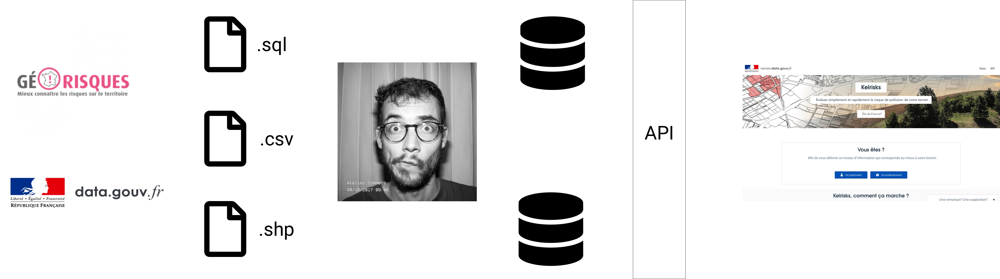

## Data Science @MTES Beno√Æt Guigal 2 juillet 2019 Startups d'√©tat üöÄ Kelrisks & Trackd√©chets üöÄ
### Bonjour üëã Je m'appelle Beno√Æt Guigal * Startups d'√âtat Kelrisks, Trackd√©chets * Ex - Entrepreneur d'Int√©r√™t G√©n√©ral (d√©fi Hopkins) * Ex - Startups: Captain Dash, Figure * Blog √©cologie [https://benoitguigal.fr/blog/](https://benoitguigal.fr/blog/)
### Plan * Data Science ? * Boite à outils * Géocodage @Kelrisks * Consolidation de bases @Trackdéchets
### Data science ? * Collecter * Stocker, Modéliser * Explorer (stats) * Visualiser, Cartographier * Transformer * Industrialiser * ~Machine learning, IA~

### Boite à outils * Python * Pandas (Data Analysis) * Peewee (ORM) * Jupyter notebook * SQL * Embulk (data loader) * Airflow (data pipeline) * QGIS
## Géocodage @Kelrisks [https://github.com/MTES-MCT/kelrisks-datascience/]([https://github.com/MTES-MCT/kelrisks-datascience/])
> Le géocodage consiste à retrouver une adresse au sein d’un référentiel (par exemple la Base Adresse Nationale). Ceci permet d’obtenir sa position géographique mais aussi une adresse correctement structurée.
* *64 Avenue du Docteur Durand, 94110 Arcueil* * *64 av. du Dr Durand Arcueil* * *Angle de la rue des Acqueducs et de la rue de la Comète à Gentilly* * *43 - 49 rue Jean Jacques Rousseau 94250 Gentilly* * *route de Fontainebleau 94250 Gentilly* * *Lieu-dit La Grande Pinte, Saint-Ouen-l-Aumone* * *Centre Commercial Moulin à Franconville*
### Addok: "Search engine for address. Only address" * Recherche en texte intégral "floue" * [Sous le capot du géocodeur addok @cquest](https://medium.com/@cq94/sous-le-capot-du-g%C3%A9ocodeur-addok-398ce9b2b1fa) * BAN [adresse.data.gouv.fr](https://adresse.data.gouv.fr/) * OSM BANO [bano.addok.xyz](http://bano.addok.xyz) * OSM POI [poi.addok.xyz](http://poi.addok.xyz)
### Géocodage ICPE Ile-de-France avec adresse.data.gouv.fr * ~ 26000 établissements * ~ 13000 non géolocalisés ou "centroïde commune" * ~ 6000 géolocalisations précises récupérées
### Industrialisation
## Consolidation de bases de données @Trackdéchets [https://github.com/MTES-MCT/trackdechets-datascience/]([https://github.com/MTES-MCT/trackdechets-datascience/])
```
### ICPE x IREP ``` SELECT a.*, b.adresse as irep_adresse, b.code_postal as irep_code_postal, b.commune as irep_commune, b.departement as irep_departement, b.coordonnees_X as irep_coordonnees_X, b.coordonnees_Y as irep_coordonnees_Y FROM icpe as a LEFT JOIN irep as b ON a.code_s3ic = b.code_s3ic ```
### ICPE x SIRENE
### ICPE x SIRENE <img src="./images/icpe_x_sirene.png" alt="icpe_x_sirene" style="width:1000px;"/>
### Reference matching Faire une jointure entre une table de données bruitée et une table de référence * fuzzywuzzy * dedup * elasticsearch
### The merge machine
* ~ 9000 ICPE du secteur des déchets * ~ 2500 numéros SIRET manquants * ~ 1200 numéros SIRET retrouvés
### Merci ! <img src="./images/giphy.gif" alt="giphy" style="width:400px;"/>